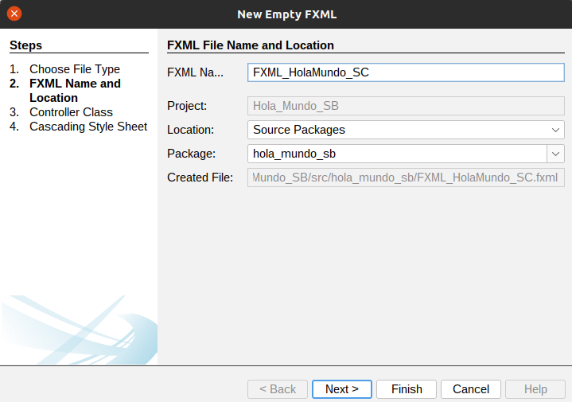

Vamos a escribir una aplicación JavaFX simple que imprime hola mundo en la consola al hacer clic en el botón que se muestra en el escenario.
Ahora lo haremos utilizando un Modelo Vista Controlador (MVC), la vista y el Controlador estarán separados, utilizaremos un entorno gráfico para diseñar nuestro proyecto.
Importante: este proceso se repetirá cada vez que crees una nueva aplicación:
- Crea una aplicación Java Aplication (yo la he llamado Hola_Mundo_SB)
- Añade la librería JavaFX.
- Modifica el check de Compile on save de las propiedades.
- Añade la ruta del campo VM de properties - > RUN
- Cuidado con las clases seleccionadas en los import, deben ser de la clase javafx.
Paso 1: Añadir un fichero Empty FXML.
Si no te aparece como opción (como se muestra en la siguiente imagen) es porque lo has creado nunca ninguno, buscalo en la opción Other... :
Escribe su nombre y pulse siguiente:

Marca la opción Use Java Controller, escribe el nombre del controlador y pulsa siguiente:
Podemos utilizar hojas de estilo para modificar la apariencia de nuestra vista, marca la opción Use Cascading Style Sheets y crea o sube el estilo:
En la estructura del proyecto que acabamos de crear, podemos ver los 4 archivos:
- FXML_HolaMundo_SC.fxml (Vista)
- FXML_HolaMundo_SCController.java (Controlador)
- Hola_Mundo_SC.java (principal)
- fxml_holamundo_sc.css (hoja de estilo)
Esta es la manera en la que están relacionados entre ellos:
La clase java Hola_Mundo_SB es la clase principal en este proyecto, y será la que inicia la ejecución de la aplicación.
Dentro de su código fuente, en el método abstracto sobreescrito start(Stage stage), debemos cargar la estructura de la ventana contenida en el archivo FXML_HolaMundo_SC.fxml:
- Parent root = FXMLLoader.load(getClass().getResource("FXML_HolaMundo_SC.fxml"));
- Instanciar un objeto de tipo Scene y añadir la vista en su construcción
- Colocamos la escena en el escenario (Stage) y lo hacemos visible
- No hay que olvidar incluir la sentencia launch(args) en el método main().
package hola_mundo_sb;
import javafx.application.Application;
import javafx.fxml.FXMLLoader;
import javafx.scene.Parent;
import javafx.scene.Scene;
import javafx.stage.Stage;
public class Hola_Mundo_SB extends Application {
@Override
public void start(Stage stage) throws Exception {
Parent root = FXMLLoader.load(getClass().getResource("FXML_HolaMundo_SC.fxml"));
Scene scene = new Scene(root);
stage.setScene(scene);
stage.show();
}
public static void main(String[] args) {
launch(args);
}
}Paso 2: crear la vista con Scene Builder:
A su vez, el archivo FXML_HolaMundo_SC.fxml hace referencia en su código a la clase FXML_HolaMundo_SCController.java que va a hacer las funciones de controlador, gestionando las acciones que realice el usuario sobre los elementos de la ventana.
Desde Scene Builder podemos ver o modificar que clase Java va a hacer las funciones de controlador, concretamente desde el apartado Controller que puedes encontrar en la parte inferior izquierda.
Editamos el fichero vista FXML_HolaMundo_SC.fxml (botón derecho sobre el fichero y open).
Añadimos un Button desde la pestaña Controls (izquierda), hacer click sobre el control (Button) y arrastrar a la escena.
Justo debajo arrastramos un segundo control, en este caso un Label.
A la derecha y teniendo seleccionado el Button, cambiamos el texto que mostrará (propiedad Text) y escribimos "Haz click".
Importante: en la pestaña Code del botón escribimos un fx:id para identificar al botón, por ejemplo btnClick. Dará un aviso, pero no importa aún no lo tenemos todo enlazado.
Repetimos el proceso con la Etiqueta. En la pestaña Code de la Label escribimos un fx:id para identificar a esta etiqueta, por ejemplo lbTexto.
Guardamos y nos vamos al proyecto.
Paso 3: Actualizamos el controlador.
Vamos a añadir el método handleButtonAction dentro del controlador FXML_HolaMundo_SCController.
Como vamos a modificar el texto que muestra la etiqueta (Label), necesitamos obtener (declarar) un objeto que la referencia, y para eso utilizaremos el id que le pusiste en la Vista.
package hola_mundo_sb;
import java.net.URL;
import java.util.ResourceBundle;
import javafx.fxml.FXML;
import javafx.fxml.Initializable;
import javafx.scene.control.Label;
public class FXML_HolaMundo_SCController implements Initializable {
/**
* Initializes the controller class.
*/
@FXML
private Label lbTexto;
@Override
public void initialize(URL url, ResourceBundle rb) {
// TODO
}
}Añadimos el método que escucha al botón y modifica la propiedad text de la etiqueta, también va precedido del modificador @FXML
@FXML
private void handleButtonAction(ActionEvent event) {
System.out.println("You clicked me!");
lbTexto.setText("Hello World!");
}Este es el código fuente del controlador (FXML_HolaMundo_SCController.java):
package hola_mundo_sb;
import java.net.URL;
import java.util.ResourceBundle;
import javafx.event.ActionEvent;
import javafx.fxml.FXML;
import javafx.fxml.Initializable;
import javafx.scene.control.Label;
public class FXML_HolaMundo_SCController implements Initializable {
/**
* Initializes the controller class.
*/
@FXML
private Label lbTexto;
@FXML
private void handleButtonAction(ActionEvent event) {
System.out.println("You clicked me!");
lbTexto.setText("Hello World!");
}
@Override
public void initialize(URL url, ResourceBundle rb) {
// TODO
}
}
IMPORTANTE: Observa que para que un método pueda ser invocado desde el archivo FXML, debe indicarse antes de la declaración de dicho método la anotación @FXML.
De manera similar, observa que antes de la declaración del elemento label, también se ha usado esa anotación. Eso es necesario también en ese caso, ya que desde el código Java se está haciendo referencia al elemento con ese mismo nombre (lbTexto) para cambiar el texto que contiene.
Solo nos queda decirle al botón que ejecute ese método cuando el usuario haga click sobre él.
Abrimos de nuevo el fichero FXML con SceneBuilder, seleccionamos el botón, seleccionamos la pasteña Code de la derecha y buscamos el campo On Action y podremos seleccionar nuestro método del fichero Controlador.
Salvamos y volvemos a nuestro proyecto.
Ejecutamos y probamos: